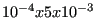
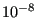

Next: Three-Dimensional Navier-Stokes Calculations Up: Aerodynamic and hydraulic networks Previous: Calculating the residual and Contents
Convergence is checked for the total temperature, mass flow, total pressure and geometry separately. Convergence is reaches if the change in solution in the last iteration does not exceed  of the largest change in this network calculation or  times the largest absolute value within the network (cf. checkconvnet.c).